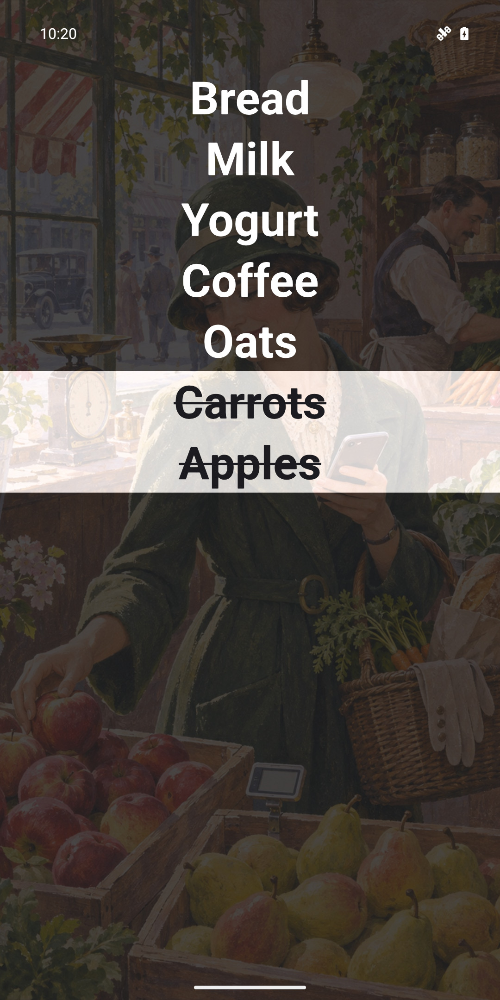
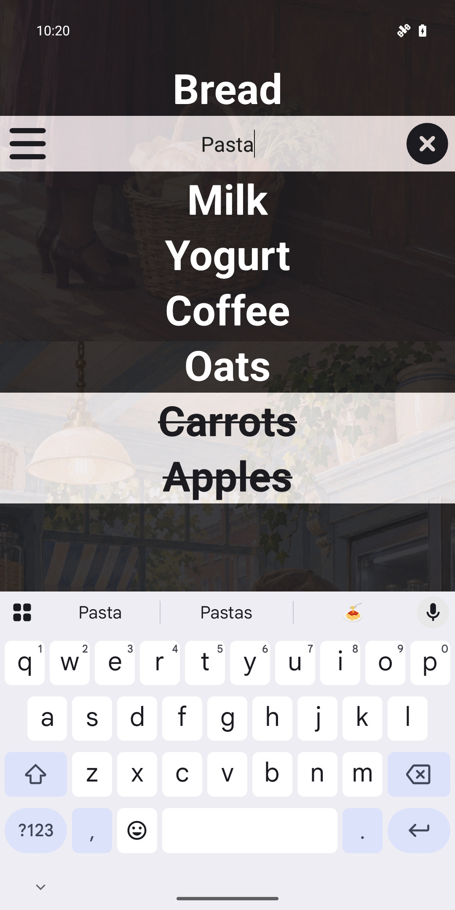
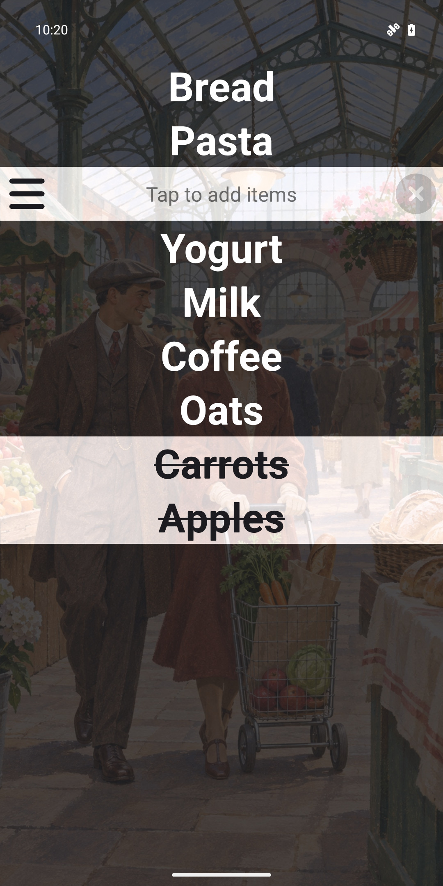
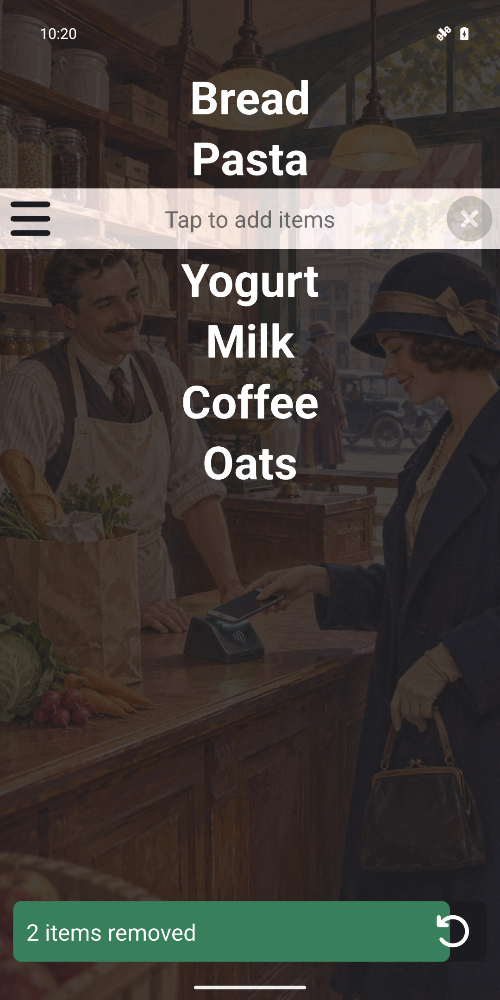
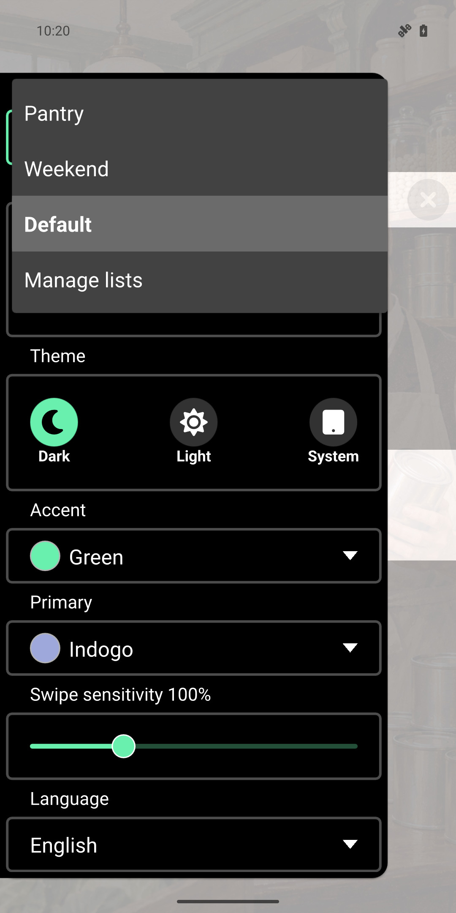
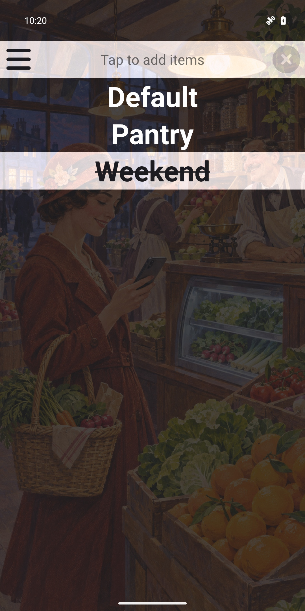
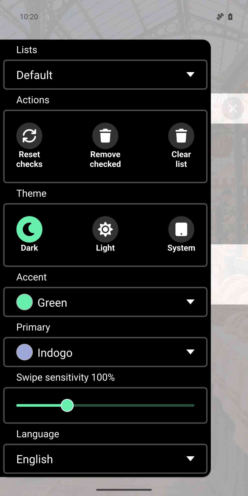

Quick-start guide
Write your list in the order you walk through the shop. Pull down to switch between shopping and editing.
Check items as you shop
Swipe an item to the right to check it. It moves to the top of the checked group, just below the items you still need. Swipe a checked item to the left to put it back among the unchecked items.
To cancel a swipe while your finger is still down, pull the row back to the centre before releasing it.

Add or edit an item
- At the top of the list, pull down until the mode icon changes colour, then release. Repeat to go back to shopping.
- Tap an unchecked item to move the editor below it. Then tap the input field and type.
- Press Enter on the keyboard to add the item. The keyboard stays open for the next entry.
Double-tap an item to change its text. You can also dictate through your keyboard if it supports voice typing.

Put items in shopping order
In edit mode, touch and hold an unchecked row until it lifts. Drag it up or down and release it where you want it.

Delete an item and undo it
In edit mode, swipe right to delete an item. Tap anywhere on the Undo bar to restore the last removal.
You have 15 seconds to undo. If there is an earlier removal waiting, restoring the latest one gives that earlier removal another 15 seconds. Switching lists ends the current Undo session.

Switch, archive or restore a list
Tap the menu icon at the left of the editor. Open Lists to switch lists, or choose Manage lists to see the catalog. Use the editor to add a list and double-tap a name to rename it.
In the catalog, swipe a list name to the left to check and archive it. It disappears from the Lists picker and keeps its items. Return to Manage lists and swipe the checked name to the left again to restore it.
A right swipe in the catalog deletes the list. Use the left swipe if you want to keep its contents for later.


Use the drawer actions
- Reset checks
- Keeps every item. Unchecked items stay first, followed by the items you checked, in the order you picked them up.
- Remove checked
- Deletes only the checked items. The Undo bar lets you restore them.
- Clear list
- Empties the current view. Tap the Undo bar to restore its entries.
For example, if you check Apples and then Carrots, Reset checks puts Apples before Carrots, after any items you left unchecked.
In Manage lists, these actions apply to the list names shown there.
Theme switches between Light, Dark and System. Set the Accent and Primary colours, adjust Swipe sensitivity, or choose Language for the interface.
